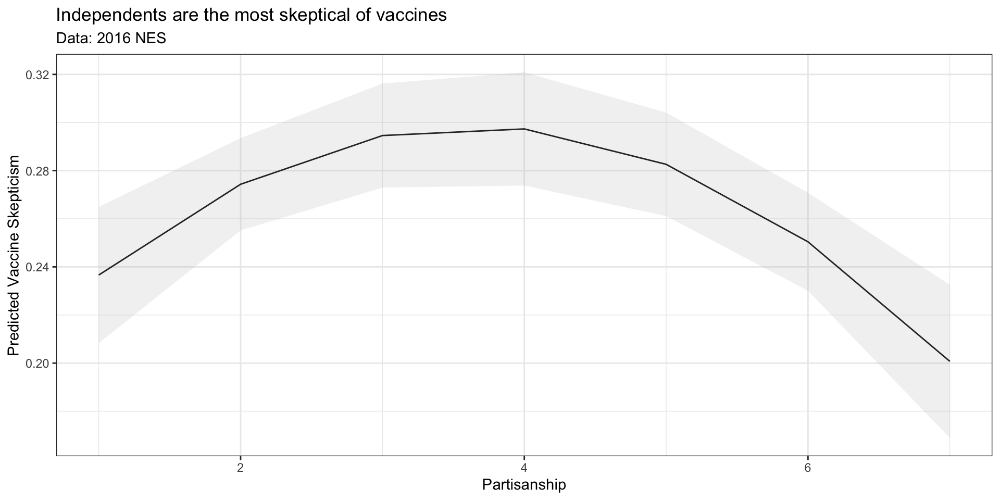

characterized by their expected values and variances
used to:
describe the data generating process
quantify uncertainty about estimates
Sampling Distributions and Standard Errors
A sampling distribution is a theoretical probability distribution of estimates obtained from taking repeated samples of size \(n\) from some population
A distribution of what we could have seen
A standard error is simply the standard deviation (\(\sigma\)) of the sampling distribution
A measure of how much our estimate could have varied.
Law of Large Numbers: As \(N \to \infty\)\(\bar{x} \to \mu\)
Central Limit Theorem: As \(N \to \infty\)\(\bar{x} \sim \mathcal{N}(\mu, \sigma^2)\)
Confidence Intervals
Confidence intervals provide a range of plausible values for our estimate
Three components:
Point Estimate (i.e. a mean, or coefficient)
Confidence Level (Often 95 percent by convention)
Margin of Error (+/- some range (typically 2*SD for 95 percent CI))
Confidence is about the interval
95 percent of the intervals construct in this manner would contain the truth.
Hypothesis Testing
A hypothesis test quantifies how likely it is that we would observe what we did (our test statistic), if some claim about the world were true (our hypothesis, typically a null ).
If our claim were true, then under this null hypothesis, our test statistic would have a distribution centered around the truth.
A p-value which describes the probability of observing a test statistic as extreme or more extreme in a world where our null hypothesis was true
If our p-value is small (\(p < 0.05\)), we reject the null hypothesis
If our p-value is large (\(p > 0.05\)), we fail to reject the null, or retain the null hypothesis
Our primary outcome of interest are beliefs about vaccines.
Variables V162162x in the 2016 NES and V202383x in the 2020 NES will serve as our primary outcome of interest, summarizing respondents answer to the following question:
Do the health benefits of vaccinations generally outweigh the risks, do the risks outweigh the benefits, or is there no difference?
Finding variables: Predictors
Similarly, V161158x in the 2016 NES and V201231x in the 2020 NES will serve our key predictor (respondent’s partisanship).
Finally, we’ll control respondents’ age, using V161267 in the 2016 NES and V201507x in the 2020 NES
Examine Distributions: Vaccine Beliefs
The variables in the NES datasets are of a class labelled which allows numeric values to have substantive labels
class(nes16$V162162x)
[1] "haven_labelled"
Our outcome variable has the following labels:
labelled::val_labels(nes16$V162162x)
-9. Refused
-9
-8. Don't know
-8
-7. No post data, deleted due to incomplete IW
-7
-6. No post-election interview
-6
1. Benefits much greater
1
2. Benefits moderately greater
2
3. Benefits slightly greater
3
4. No difference
4
5. Risks slightly greater
5
6. Risks moderately greater
6
7. Risks much greater
7
# 1. Create a object with the names of the variables you want to summarizethe_vars <-c("vaccine_skeptic01","pid","age")# 2. Select these variablesnes16 %>%select(all_of(the_vars)) %>%# 3. Pivot the datapivot_longer(cols =all_of(the_vars),names_to ="Variable" )%>%mutate(Variable =factor(Variable, levels = the_vars) )%>%arrange(Variable)%>% dplyr::group_by(Variable)%>%# 3. Calculate summary statistics dplyr::summarise(min =min(value, na.rm=T),p25 =quantile(value, na.rm=T, prob =0.25),Median =quantile(value, na.rm=T, prob =0.5),mean =mean(value, na.rm=T),p75 =quantile(value, na.rm=T, prob =0.25),max =max(value, na.rm=T),missing =sum(is.na(value)) ) -> sum_df sum_tab <-knitr::kable(sum_df,caption ="Descriptive Statistics",digits =2) %>% kableExtra::kable_styling() %>% kableExtra::pack_rows("Outcome", start_row =1, end_row =1) %>% kableExtra::pack_rows("Key Predictors", start_row =2, end_row =2) %>% kableExtra::pack_rows("Covariates", start_row =3, end_row =3)
Descriptive Statistics
Variable
min
p25
Median
mean
p75
max
missing
Outcome
vaccine_skeptic01
0
0
0
0.26
0
1
671
Key Predictors
pid
1
2
4
3.86
2
7
23
Covariates
age
18
34
50
49.58
34
90
121
Progress Report
To explore these questions, we need to
Get setup to work ✅
Load our data ✅
Recode our data ✅
Summarize our data ✅
Specify our expectations 📥
Estimate models to test these expectations
Presenting and interpreting results using
Tables
Figures
Confidence intervals (review)
Hypothesis tests (new!)
Specificying Expecations
Consider our first two motivating questions
How does partisanship shape American’s perceptions of vaccines?
Who is skeptical of the benefits of vaccination?
And some illustrative stereotypes:
“Republicans are anti-science”
“Liberal always fall for Goopy pseudo-science”
“Independents love to do their own research”
What are the empirical implications of these claims?
Specificying Expecations
Similarly, consider our third question:
Have these perceptions about vaccines changed over time?
And some similar simplified claims:
“The Covid-19 vaccine is a miracle of modern science”
“Social media is rife with misinformation about the Covid-19 vaccine”
“Politicians are politicizing vaccine politics for political benefits”
What are the empirical implications of these claims?
Specificying Expecations
Our goal is to take claims/conventional wisdom/theories, and derive their empirical implications:
H1: Partisan Differences in Vaccine Skepticism
H1a: Republicans will be the most skeptical of vaccines
H1b: Democrats will be the most skeptical of vaccines
H1c: Independents will be the most skeptical of vaccines
Specificying Expecations
H2: Temporal Differences in Vaccine Skepticism
H2a: Vaccine skepticism will decrease from 2016 to 2020 with the widespread roll out of the Covid-19 vaccine
H2b: Vaccine skepticism will increase from 2016 to 2020 with increased amounts of misinformation about the Covid-19 vaccine
H3: Partisan Difference in Vaccine Skepticism Over Time Partisan differences in Vaccine Skepticism will increase from 2016 to 2020 with the politicization of Covid-19 policies
Motivating your expectations
In your final papers, unlike in these slides, your expectations should be grounded in existing theory, research, and evidence. For the present question, we might cite sources such as:
Enders, Adam M., and Steven M. Smallpage. “Informational cues, partisan-motivated reasoning, and the manipulation of conspiracy beliefs.” Political Communication 36.1 (2019): 83-102.
Stecula, Dominik A., and Mark Pickup. “How populism and conservative media fuel conspiracy beliefs about COVID-19 and what it means for COVID-19 behaviors.” Research & Politics 8.1 (2021): 2053168021993979.
Jennings, Will, et al. “Lack of trust, conspiracy beliefs, and social media use predict COVID-19 vaccine hesitancy.” Vaccines 9.6 (2021): 593.
Hollander, Barry A. “Partisanship, individual differences, and news media exposure as predictors of conspiracy beliefs.” Journalism & Mass Communication Quarterly 95.3 (2018): 691-713.
Model Specification
Translate these expectations into empirical models requires choices about how to specify our models
How should we measure/operationalize our outcome
Should we measure beliefs about vaccines with 7-point ordinal scale or as a binary indicator of vaccine skepticism
How should we measure/operationalize our key predictor(s)
Should we measure partisanship using a 7 point scale or as categorical variable?
What should we control for in our model?
Factors likely to predict both our outcome and our key predictor of interest
There are rarely definitive answers to these questions. Instead, we will often estimate multiple models to try and show that our findings are robust to alternative specifications
Model Specification
For your projects, every group will almost surely estimate some form of the following:
Baseline bivariate model: The simplest test of the relationship between your outcome and key predictor
Multiple regression model: A test of the robustness of this relationship, controlling for alternative explanations
Model Specification
In practice, I suspect you may estimate multiple regression models such as:
Alternative specifications/operationalizations of outcomes and predictors
Interaction models to test conditional relationships
Polynomial models to test non-linear relationships
Translating Theoretical Claims into Empirical Expectations
Before we estimate our models in R, we will write down our models formally and empirical implications of our theoretical expectations in terms of the coefficients of our model.
If \(\beta_1\) is positive this is consistent with H1a (greater skepticism among Republicans), - If \(\beta_2\) is negative this is consistent with H1b (greater skepticism among Democrats),
But how could we test H1c – greater skepticism among Independents, who are “4s” on \(\text{PID}_{7pt}\)?
Translating Theoretical Claims into Empirical Expectations
We could fit a polynomial regression, including both partisanship and “partissanship squared” to allow the relationship between partisanship and vaccine skepticism to vary non-linearly
Testing Hypotheses 2 and 3 involve making comparisons across models estimated on data from different surveys.
Formally, testing these expectations is a little more complicated
we could pool our two surveys together include an interaction term for survey year
For our purposes, we’ll treat these as more qualitative/exploratory hypotheses:
H2a/b implies overall rates of vaccine skepticism will be lower/higher in 2020 compared to 2016
H3 implies that whatever partisan differences we find in 2016 should be larger in 2020.
Progress Report
To explore these questions, we need to
Get setup to work ✅
Load our data ✅
Recode our data ✅
Specify our expectations ✅
Estimate models to test these expectations 📥
Presenting and interpreting results using
Tables
Figures
Confidence intervals
Hypothesis tests
Estimating Empirical Models
Having derived empirical implications of our theoretical expectations expressed in terms of linear regressions, now we simply have to estimate our models in R.
When estimating the same model on different datasets we can write the formulas once
Using a single significance threshold of \(p < 0.05\)
Giving the models custom names
Adding a header to group models by year
Changing the caption of the table
# Basictab_basic <- texreg::htmlreg(list(m1_2016,m2_2016,m3_2016, m1_2020,m2_2020,m3_2020))# Formattedtab_fetch <- texreg::htmlreg(list(m1_2016,m2_2016,m3_2016, m1_2020,m2_2020,m3_2020),# Reporting coefficients to 3 decimal placesdigits =3,# Using a single significance threshold stars =0.05,# Giving the variables in substantive namescustom.coef.names =c("(Intercept)","PID (7pt)","Age","PID<sup>2</sup> (7pt)","Independent","Republican" ),# Use SE instead o CIsinclude.ci = F,# Giving the models custom namescustom.model.names =paste("(",c(1:6),")", sep=""),# Adding a header to group models by yearcustom.header =list("NES 2016"=1:3, "NES 2020"=4:6),# Changing the caption of the tablecaption ="Partisanship and Vaccine Skepticism")
Statistical models
Model 1
Model 2
Model 3
Model 4
Model 5
Model 6
(Intercept)
0.46***
0.35***
0.42***
0.34***
0.32***
0.35***
(0.02)
(0.04)
(0.02)
(0.02)
(0.02)
(0.02)
pid
-0.00
0.06***
0.02***
0.04***
(0.00)
(0.02)
(0.00)
(0.01)
age
-0.00***
-0.00***
-0.00***
-0.00***
-0.00***
-0.00***
(0.00)
(0.00)
(0.00)
(0.00)
(0.00)
(0.00)
pid^2
-0.01***
-0.00
(0.00)
(0.00)
pid3catIndependent
0.17***
0.20***
(0.02)
(0.02)
pid3catRepublican
-0.02
0.10***
(0.02)
(0.01)
R2
0.02
0.03
0.04
0.03
0.03
0.05
Adj. R2
0.02
0.03
0.04
0.03
0.03
0.04
Num. obs.
3494
3494
3507
7041
7041
7052
***p < 0.001; **p < 0.01; *p < 0.05
Partisanship and Vaccine Skepticism
NES 2016
NES 2020
(1)
(2)
(3)
(4)
(5)
(6)
(Intercept)
0.458*
0.350*
0.417*
0.343*
0.318*
0.352*
(0.025)
(0.035)
(0.023)
(0.018)
(0.024)
(0.016)
PID (7pt)
-0.005
0.064*
0.021*
0.037*
(0.003)
(0.016)
(0.002)
(0.011)
Age
-0.004*
-0.003*
-0.004*
-0.004*
-0.004*
-0.003*
(0.000)
(0.000)
(0.000)
(0.000)
(0.000)
(0.000)
PID2 (7pt)
-0.009*
-0.002
(0.002)
(0.001)
Independent
0.175*
0.200*
(0.023)
(0.016)
Republican
-0.016
0.100*
(0.016)
(0.011)
R2
0.023
0.028
0.042
0.032
0.032
0.045
Adj. R2
0.022
0.027
0.042
0.032
0.032
0.045
Num. obs.
3494
3494
3507
7041
7041
7052
*p < 0.05
Telling a Story with Regression
First, provide an overview the models presented in the table
Explain what each model is doing conceptually
Then start with your simplest model (first column)
Use this as a chance to explain core concepts from the course
What is regression
How should I interpret a coefficient substantively
How should I interepret the statistical signficance of a give coefficient
As you move from left to right (simple to more complex)
you need not interpret every single coefficient in the model
instead highlight the factors that are important for the reader to note (e.g. a comparison between one coefficient in model or another.)
Example
Table 1 presents the results of three specifications exploring the relationship between partisanship and vaccine skepticism using data from the 2016 (Models 1-3) and 2020 (Models 4-5) National Election Studies.
Models 1 and 4 operationalize partisanship as a 7-point scale, where 1 corresponds to Strong Democrats, 4 to Indepndents, and 7 to Strong Republicans in the 2016 (Model 1) and 2020 (Model 2) surveys.
Models 2 and 5 allow the relationship between partisanship and vaccine skepticism to vary non-linear again for the 2016 (Model 2) and 2020 (Model 5) elections.
Models 3 and 6 treat partisanship as categorical variable, describing how Independents and Republicans differ from Democrats, the reference category in these models.
All models control age, since (put in substantive justification for controlling for age here)
Story: Testing for Partisan Differences
The results from Model 1 provide little initial evidence for partisan differences in vaccine skepticism in the 2016 Election.
The coefficient on the partisanship variable is -0.005, suggesting that a unit increase in partisanship (going from being a Strong Democrat to just a Democrat, or an Independent to an independent who leans Republican), is associated with just a 0.5 percentage point increase in the probability of being a vaccine skeptic (believing that the risks of vaccination outweigh the benefits or that their is no difference in the risks versus benefits).
Furthermore the 95-percent confidence interval for this estimate (-0.011, 0.002) brackets 0, suggesting the true population estimate from this model could be either positive or negative. Similarly, we fail to reject the null hypothesis that the true coefficient on partisanship in this model is 0 as the test statistic for this estimate ( -1.38) corresponds to a p-value of 0.168 suggesting that we would see test statistics this large or larger fairly often when the true relationship was 0.
In sum, the results from Model 1 provide little support for any of the expectations described by H1
Testing for Partisan Differences: Model 2
While coefficients from Model 1 suggest little evidence of partisan differences in vaccine skepticism, the coefficients on both partisanship, and partisanship squared are statistically significant (p < 0.05).
The coefficients from polynomial regressions can be difficult to interpret jointly and so Figure 1 presents the predicted values from Model 2, holding age constant at its sample mean.
pred_df_m2 <-expand_grid(pid =1:7,age =mean(nes16$age, na.rm=T))pred_df_m2 <-cbind(pred_df_m2, predict(m2_2016,pred_df_m2, interval ="confidence"))fig_m2 <- pred_df_m2 %>%ggplot(aes(pid, fit, ymin =lwr, ymax =upr))+geom_line()+geom_ribbon(alpha=.2, fill="grey")+theme_bw()+labs(x ="Partisanship",y ="Predicted Vaccine Skepticism",title ="Independents are the most skeptical of vaccines",subtitle ="Data: 2016 NES" )
fig_m2

We see from Model 2 that 29.7 percent [27.3%, 32.1%] of Independents in the 2016 NES were predicted to be vaccine skeptics compared to 23.7 percent [20.8%, 26.5%] of Strong Democrats and only 20.1 percent [16.9%, 23.3%] of Strong Republicans.
Model 3 tells a similar story to model 2. Again, adjusting for differences in vaccine skepticism explained by age, Model 3 predicts that 41.7 percent [37.7%, 45.6%] of Independents in the 2016 NES are vaccine skeptics compared to 24.2 percent [22.1%, 26.2%] of Democrats, and 22.6 percent [20.4%, 24.8%] of Republicans.
Note the coefficients from Model 3 imply that the differences between Independents and Democrats are statistically significant (\(\beta_{Ind} = 0.175, p < 0.05\)), the differences between Republicans and Democrats are not (\(\beta_{Rep} = -0.004, p = 0.31\))
The results for the 2016 NES suggest political independents are most skeptical of vaccines.
The results for 2020 suggest the relationship between partisanship and vaccine skepticism has changed overtime.
The coefficient on partisanship in model 4 is now positive and statistically significant (p < 0.05), suggesting that as respondents become more Republican, they are more likely to be skeptical of vaccines
The coefficients from Model 5 suggest the relationship between partisanship skepticism is non linear, which is confirmed by model 6.
In Model 6, we see that independents remain the most skeptical of vaccines in 2020 \((\beta = 0.20,\, p <0.05)\), but that Republicans now tend to be more skeptical of vaccines than Democrats \((\beta = 0.10,\, p <0.05)\)
Regression Discontinuity Design
Motivating Example
Do Members of Parliament in the UK get richer from holding office (QSS Chapter 4.3.4)
The continuity assumption is a formal way of saying that observations close to the threshold are good counterfactuals for each other
We can’t prove this assumption
But if it holds, we should observe
no sorting around the cutoff (no self selection)
similar distributions of covariates around the cutoff (balance tests)
no effect of treatment on things measured pre-treatment (placebo tests)
Instrumental Variables
Instrumental Variables
Instrumental variables are an economists favorite tool for dealing with omitted variable bias
We have some non random treatment whose effects we’d like to assess
We’re worried that these effects are confounded by some unobserved, omitted variable, that influences both the treatment and the outcome
We find an instrumental variable that satisfies the following:
Randomization
Excludability
First-stage relatioship
Monotonicity
Allowing us estimate a Local Average Treatment Effect (LATE) using the only the variation in our treatment is exogenous (uncorrelated with ommited variables)